Ground
Trees never fall from alone, that should make your super suspicious. Maybe it was an explosion, a shot, but maybe it’s a tank driving around and that’s what you want to shoot aren’t you?
here is a typical example of taking cover in a "hull down" position covering your weaker part of the tank, and how to fight around corners, BUT the problem around corners is they can shoot your driver and pen you like that even before you get a shot on your prey, try instead driving backwards in an angle away from that angle,so he deflects from your angled rear.
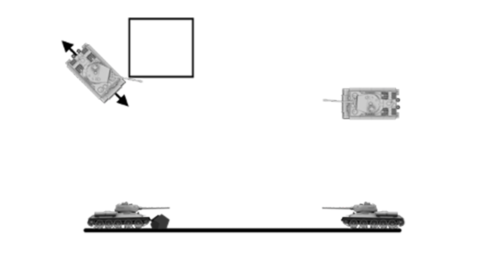
Another benefit of the "hull down" position is, that you are able to shoot at the whole tank from your position, but he can only hit your armored turret from the front. Aim for the lower glacis and make sure he doesn’t hit your barrel before you can get your shot off.
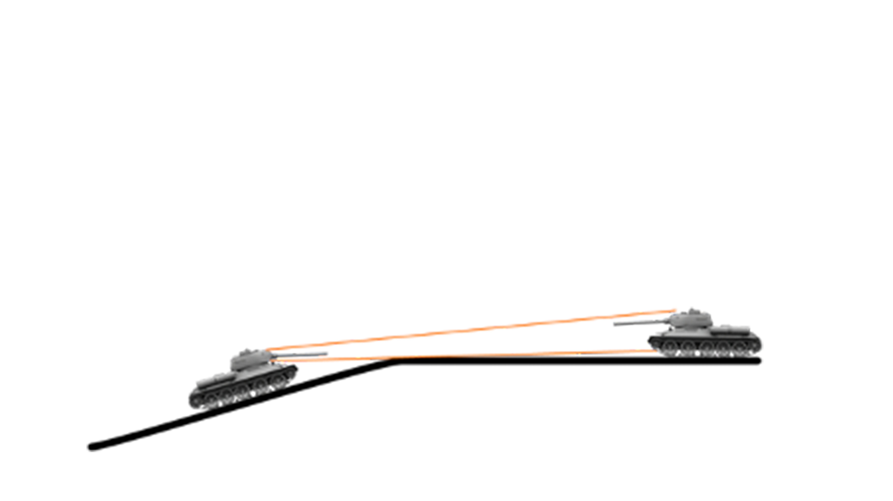
perfect example again for a fight around corners as before, is to position your tank in a way, that your prey can’t shoot your tank before you can see him, people tend to position the tank the way they want to drive, but if you show your driver he will get shot for sure
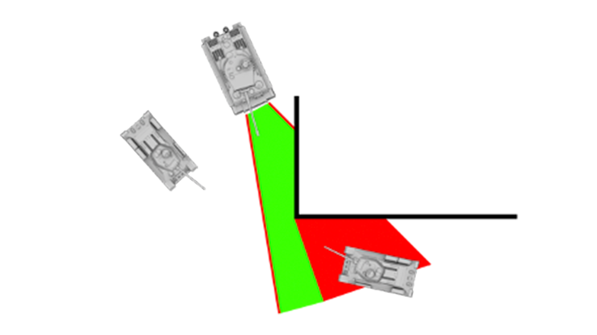
if you see an enemy behind a hill, you will feel the rush to jump on him over that hill. Just DONT do it, cause if he knows you are attacking, he can shoot you at your weakest spot while your barrel will aim for the sky. Better wait and be sure no one can engage you while performing that stunt.
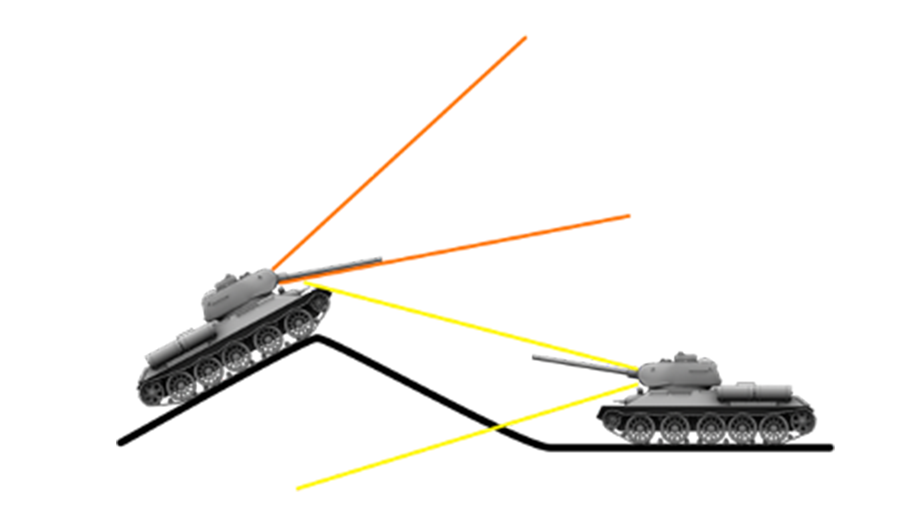
if you for whatever reason, survive that magical stunt, you reward is a clean shot to another weak spot of tanks, the top. Take a deep breath, make sure your aim is on point, and enjoy the boom.
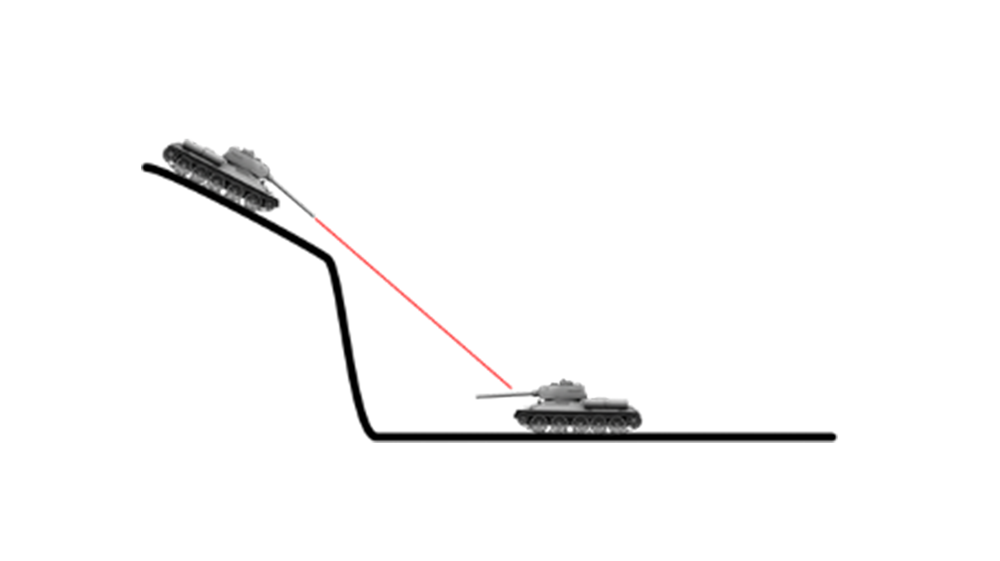
let’s talk about urban fights in agile and/or light tanks. If you manage to disable your prey, just keep driving around him to get a good shot at the weaker sides of tanks. The sides and specially the back of a tank has less to no armor. Hit the barrel, the tracks, the engine and watch him go crazy shooting you with his tiny MG while you dance around him and finish him up.
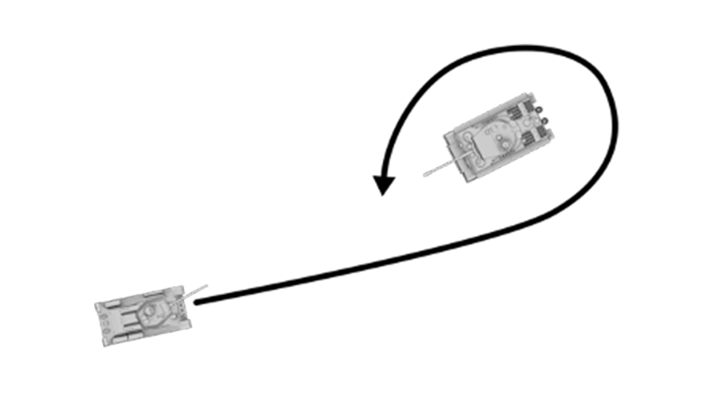
sometimes it’s not the damage that brings pain, it’s the lack of turret turn speed. especially Russian tanks turn slow AF. But there is a way to increase that speed. Just turn your tank WITH the turret so it adds up and helps you to get your opponent back Infront of your barrel. Also try to drive backwards to get even more distance to your prey.
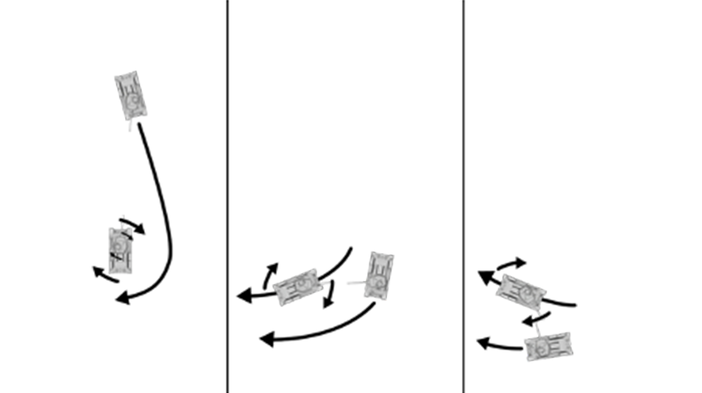
let’s talk about a squad attack. If you and your buddy are facing one pray, just split up and attack him from both sides, because he can only focus on one at a time.
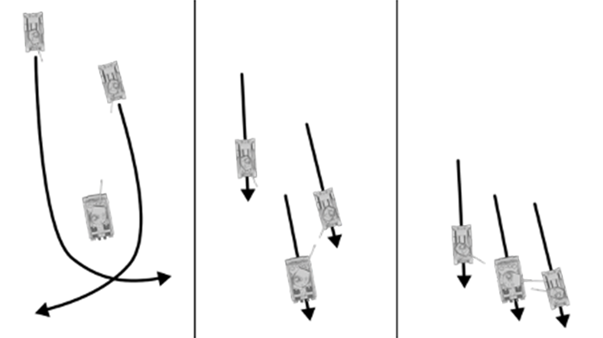
SQUAD FORMATION. Here is the good stuff, if you guys have a heavy tank or a main attacker, place yourself behind him in a way that you benefit from his armor. At the same time you are able to fire at your prey without risking to much of your own health.
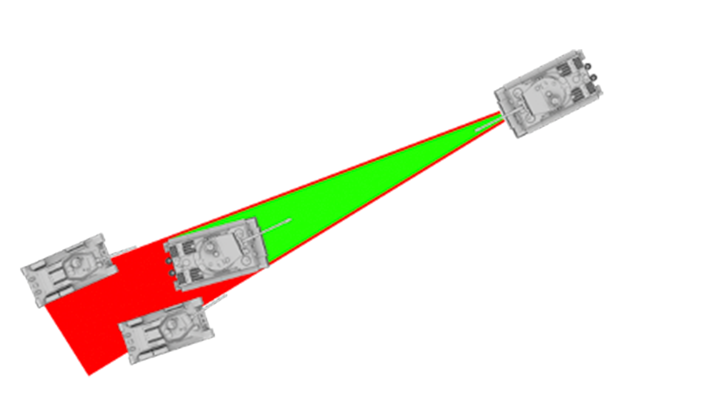
if you fight without a stabilizer, use the reload time to move around. Your chance getting missed by the enemy is higher and you get the benefit to position yourself better after every shot. A lot of people get shot while reloading because they think a heavy tank can eat shells. Just like boxing, better hit without getting hit.
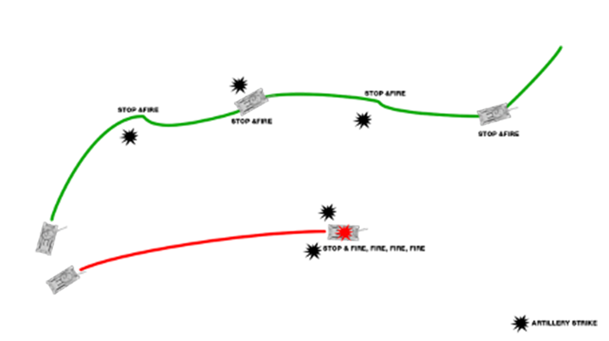
Fighting around corners as a group. As said before, position yourself back to cover after a shot so you can reload without risking your health. The benefit of a squad formation is that others can take a shot while you come back for a reload. Also, if you get hurt, allow them to tow you back into safety.
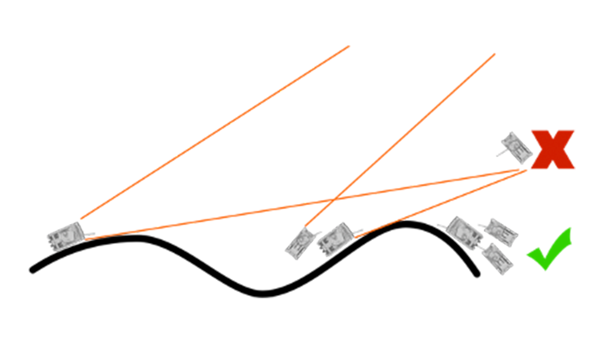
If you and your squad are truly on another level, try baiting prey into setup traps. People tend to focus on a target high, so they forget that others can be around.
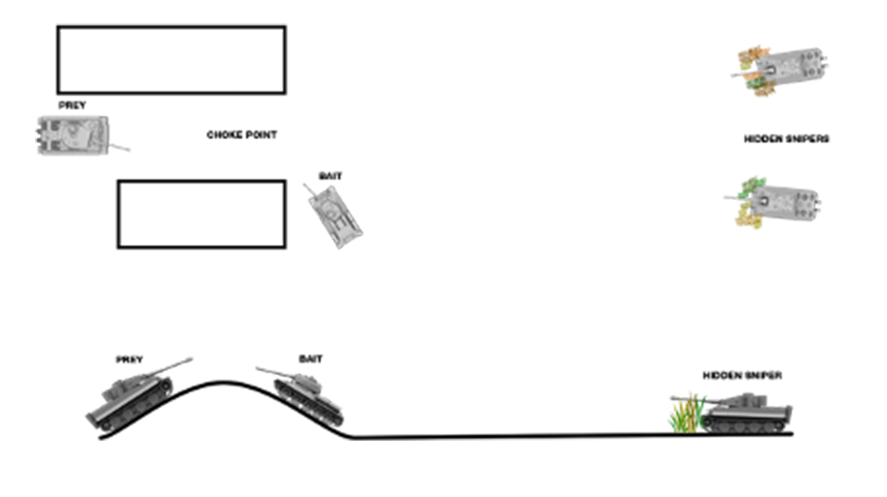
What’s better than one tank? That’s right, two tanks. I call it the "Buddy System" by staying together with at least one "buddy", the chances of surviving a fight more than doubles. You shoot and miss? Your Buddy got you. You look front and did not see the guy on the right? Your Buddy got you. Even if you get damaged or disabled, your buddy can take him out or tow you back and help you with repairs.